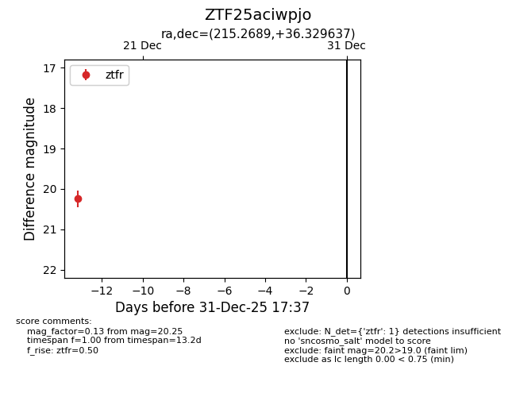
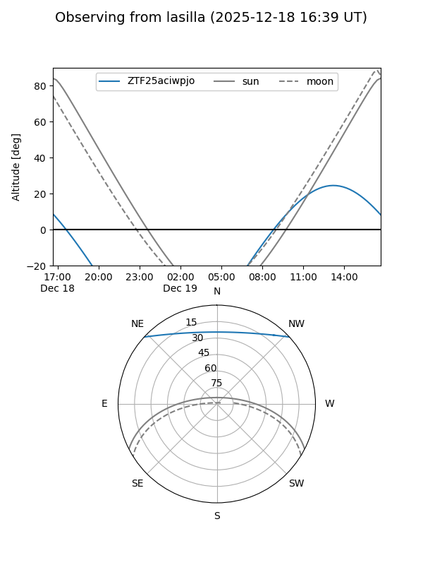
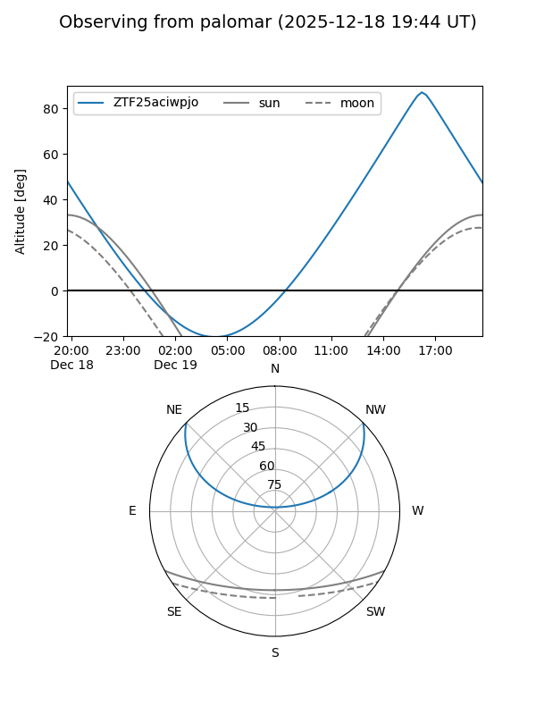

ZTF25aciwpjo
Target ZTF25aciwpjo at 2025-12-31 18:00
Aliases and brokers:
FINK: link
Lasair: link
ALeRCE: link
alt names
ZTF25aciwpjo (ztf,fink_ztf)
Coordinates:
equatorial (ra, dec) = 215.2689,+36.32964
equatorial (HMS+DMS) = 14:21:04.53,+36:19:46.69
galactic (l, b) = (64.3562,+68.90543)
Flags:
Photometry:
last ztfr=20.25
1 ztfr detections
Lightcurve

Visibility


Additional plots